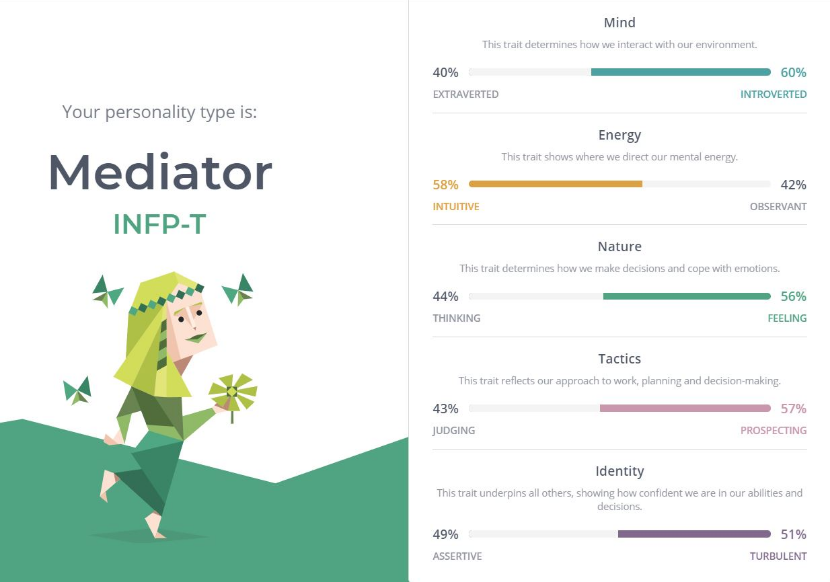

I think fairness is important, I do not like taking advantage of others,
I avoid conflict, and like to resolve it,
I dislike people jumping to conclusions and misrepresenting or misinterpreting facts,
I like to understand the big picture,
I prefer to not be the centre of attention and prefer to guide the actions of others, though will lead if required.
I asked two close friends and my wife about what in their opinion my core personal values might be. In their view I am:
competent and have a thirst for knowledge with a love for history,
humourous and like to make light, calm and considered in that I like to weigh things up before I make decisions,
generous and care about how other feel.
Indecisive at times,
Sometimes miss details and nuances,
Not always great at finishing things off.
As some research I undertook a Myers-Briggs personality test online. It determined that my personality is INFP-T type. This is a personality type characterised by introversion, intuition, feeling, and perception. One site describes this as a mediator personality type.

This test result is quite different to what I got in some tests I undertook when I was younger out of university, that suggested I was less intuitive, and less feeling. I took the test twice with quite similar results, and asked my friends whom I had asked to consider my core values who also have some background in psychology. They agreed heartily with this result so I have resolved to accept it.
Reading further into this personality type it does describe me quite well in terms of how my career and personal relationships have developed, though engineering does not seem a common career path for mediators who are more commonly drawn to creative professions where they can create their own worlds. I have scratch this itch through my choice of fictional and historical reading. I will discuss the impacts of my values and personality traits further in the strengths and weaknesses. 16Personalities provides an overview of the INFP and other Myers-Briggs personality types.
Dealing with tension
Working as a civil engineer, often my colleagues and I work in groups with a design lead where we are working as a group towards providing design solutions for lots of complex problems. There is always a balance between providing a detailed solution to an outcome, and providing a simplified solution that shows design objectives have been met but providing this evidence by proving a concept rather than a larger set of detailed and precise calculations (often based on large assumptions).
In this instance I believed that the detailed work was not so beneficial as the inputs to the calculations had inherent error, and the calculations implied a degree of accuracy that was not there. In my design leaders view, it was the right thing to do to carry out all of the calculations anyway as this fit her set of ethics and understanding. At the time I accepted her view and got on with the work. I think this is because I didn’t want to upset the team harmony in this situation, and I truly respect her as an excellent and driven engineer.
It was effective in that we eventually got the work done. However I could have push to try to get me some time to demonstrate my point of view. She may have come around. In retrospect though I am happy with the way it played out.
Ethics
In my work as a professional engineer (the civil kind) I often have to make ethical decisions that result in difficult conversations. This might be that something has been done poorly on site, a design didn't work out or that something is late or more expensive. There is often a temptation to cut corners to save time or costs, but my professional code of ethics requires me to raise these.
As a positive, it does push me to research and improve next time I come across the same situation. I am also good at understanding big picture problems. .
How my culture has influenced my values and identity
I have grown up in a Pakeha European culture with a middle class upbringing. I realise that my upbringing has provided me with many opportunities compared to most of the world. I don't strongly associate with any particular cultural identity. I dislike the ideas of being nationalistic.
My university education in civil engineering impacts my world view. I like to think I have a strong respect for science and informed decision making, though I acknowledge that I am as susceptible to bias as every other human. I try to be empathetic with the perspective of others who have travelled different paths.
How my strengths and limitations influence my learning and career development
Strengths:
My work and technical background and engineering training sets me in a good position to carry out lots of reading and deskwork without tiring.
My personality type favours having a broad understanding of many issues. I think this can be a benefit for problem solving.
I like to resolve team conflicts which allows me to improve team dynamics and help people lead.
I am easily able to work independently as required.
I am not scared to try developing new skills (Dev Academy as an example).
Weaknesses:
My introversion means I do not have large networks of friends but heavily depend on fewer numbers of very close friends which can place limits my professional network. I need to make effort to open up and communicate.
My personality type finds it difficult to truly settle into a career path and role. I have changed companies more than most of my peers. However I think once I can find something I can commit to I should find success.
I am less focused in my career development than other more assertive and charismatic personality types. Getting coaching and mentoring will help me.
In terms of learning, my personality type has a tendency to drift and read broadly rather than stay focused. Time boxing and deliberate learning goals will certainly help me succeed if I can be disciplined in sticking to them.
Self-doubt is common with my personality type in the face of setbacks which I have experienced at multiple times in the last few years. I need to open up about this to coaches and mentors.